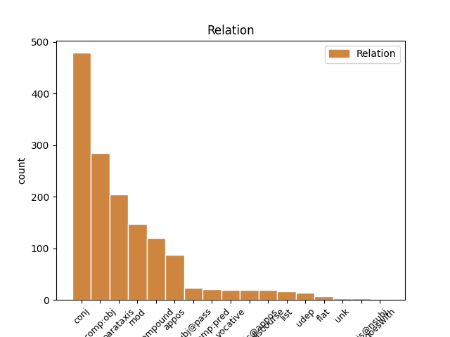
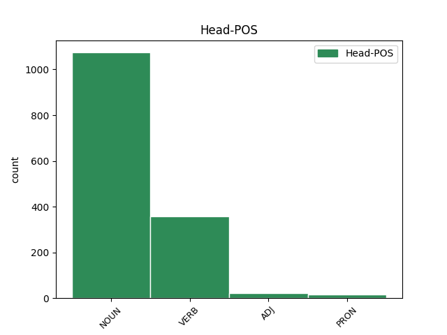
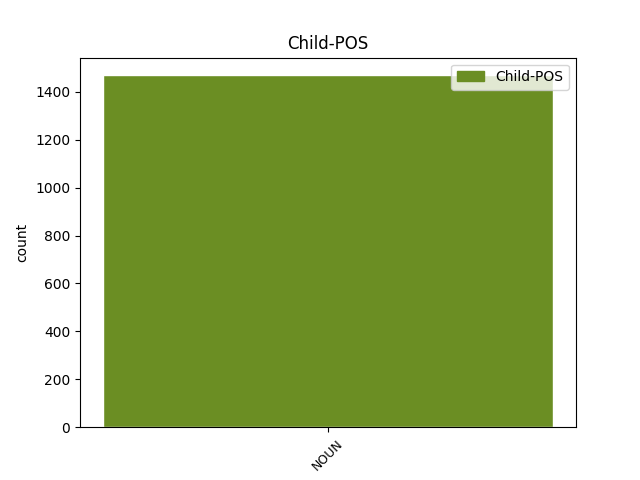

Distribution of features within this leaf



Agreement Rules sorted by frequency.
- When the dependent token is the conjunct(conj) of the head token, and the head token is NOUN and the dependent token is NOUN.
1 #Sartori _ _ _ _ 0 _ _ _
2 : _ _ _ _ 0 _ _ _
3 #Grillo _ _ _ _ 0 _ _ _
4 non _ _ _ _ 0 _ _ _
5 ha _ _ _ _ 0 _ _ _
6 nessuna _ _ _ _ 0 _ _ _
7 ricetta ricetta NOUN S Gender=Fem|Number=Sing 0 _ _ _
8 ne _ _ _ _ 0 _ _ _
9 comprensione comprensione NOUN S Gender=Fem|Number=Sing 7 conj _ _
10 di _ _ _ _ 0 _ _ _
11 la _ _ _ _ 0 _ _ _
12 politica _ _ _ _ 0 _ _ _
13 verticale _ _ _ _ 0 _ _ _
14 che _ _ _ _ 0 _ _ _
15 partendo _ _ _ _ 0 _ _ _
16 da _ _ _ _ 0 _ _ _
17 le _ _ _ _ 0 _ _ _
18 elezioni _ _ _ _ 0 _ _ _
19 deve _ _ _ _ 0 _ _ _
20 creare _ _ _ _ 0 _ _ _
21 e _ _ _ _ 0 _ _ _
22 gestire _ _ _ _ 0 _ _ _
23 lo _ _ _ _ 0 _ _ _
24 Stato _ _ _ _ 0 _ _ _
1 Castelfiorentino _ _ _ _ 0 _ _ _
2 Il _ _ _ _ 0 _ _ _
3 Pd _ _ _ _ 0 _ _ _
4 replica _ _ _ _ 0 _ _ _
5 a _ _ _ _ 0 _ _ _
6 il _ _ _ _ 0 _ _ _
7 Pdl _ _ _ _ 0 _ _ _
8 su _ _ _ _ 0 _ _ _
9 il _ _ _ _ 0 _ _ _
10 governo _ _ _ _ 0 _ _ _
11 Monti _ _ _ _ 0 _ _ _
12 : _ _ _ _ 0 _ _ _
13 Chi _ _ _ _ 0 _ _ _
14 ha _ _ _ _ 0 _ _ _
15 sostenuto sostenere VERB V Gender=Masc|Number=Sing|Tense=Past|VerbForm=Part 0 _ _ _
16 un _ _ _ _ 0 _ _ _
17 governo governo NOUN S Gender=Masc|Number=Sing 15 comp:obj _ _
18 di _ _ _ _ 0 _ _ _
19 incapaci _ _ _ _ 0 _ _ _
20 non _ _ _ _ 0 _ _ _
21 può _ _ _ _ 0 _ _ _
22 ogg... _ _ _ _ 0 _ _ _
23 http://t.co/ZyX7TyiX _ _ _ _ 0 _ _ _
1 Governo _ _ _ _ 0 _ _ _
2 #Monti _ _ _ _ 0 _ _ _
3 , _ _ _ _ 0 _ _ _
4 i _ _ _ _ 0 _ _ _
5 primi _ _ _ _ 0 _ _ _
6 nomi nome NOUN S Gender=Masc|Number=Plur 0 _ _ _
7 di _ _ _ _ 0 _ _ _
8 lo _ _ _ _ 0 _ _ _
9 #staff _ _ _ _ 0 _ _ _
10 di _ _ _ _ 0 _ _ _
11 i _ _ _ _ 0 _ _ _
12 #ministri _ _ _ _ 0 _ _ _
13 | _ _ _ _ 0 _ _ _
14 Diritto diritto NOUN S Gender=Masc|Number=Sing 6 parataxis _ _
15 di _ _ _ _ 0 _ _ _
16 critica _ _ _ _ 0 _ _ _
17 http://t.co/D5qMWsS0 _ _ _ _ 0 _ _ _
18 via _ _ _ _ 0 _ _ _
19 @user _ _ _ _ 0 _ _ _
20 #news _ _ _ _ 0 _ _ _
21 #politica _ _ _ _ 0 _ _ _
1 Non _ _ _ _ 0 _ _ _
2 capisco _ _ _ _ 0 _ _ _
3 ? _ _ _ _ 0 _ _ _
4 Tutti _ _ _ _ 0 _ _ _
5 contro _ _ _ _ 0 _ _ _
6 #Grillo _ _ _ _ 0 _ _ _
7 come _ _ _ _ 0 _ _ _
8 se _ _ _ _ 0 _ _ _
9 fosse _ _ _ _ 0 _ _ _
10 il _ _ _ _ 0 _ _ _
11 candidato candidato NOUN S Gender=Masc|Number=Sing 0 _ _ _
12 premier premier NOUN S Gender=Masc 11 compound _ SpaceAfter=No
13 . _ _ _ _ 0 _ _ _
14 Mah _ _ _ _ 0 _ _ _
15 ! _ _ _ _ 0 _ _ _
16 Criticate _ _ _ _ 0 _ _ _
17 il _ _ _ _ 0 _ _ _
18 #m5s _ _ _ _ 0 _ _ _
19 e _ _ _ _ 0 _ _ _
20 quello _ _ _ _ 0 _ _ _
21 che _ _ _ _ 0 _ _ _
22 fa _ _ _ _ 0 _ _ _
23 , _ _ _ _ 0 _ _ _
24 se _ _ _ _ 0 _ _ _
25 avete _ _ _ _ 0 _ _ _
26 argomenti _ _ _ _ 0 _ _ _
27 ! _ _ _ _ 0 _ _ _
1 #fatepresto _ _ _ _ 0 _ _ _
2 @user1 _ _ _ _ 0 _ _ _
3 appoggiare _ _ _ _ 0 _ _ _
4 governo _ _ _ _ 0 _ _ _
5 @user2 _ _ _ _ 0 _ _ _
6 tassativo _ _ _ _ 0 _ _ _
7 per _ _ _ _ 0 _ _ _
8 credibilità _ _ _ _ 0 _ _ _
9 di _ _ _ _ 0 _ _ _
10 la _ _ _ _ 0 _ _ _
11 classe _ _ _ _ 0 _ _ _
12 politica _ _ _ _ 0 _ _ _
13 a _ _ _ _ 0 _ _ _
14 tutela _ _ _ _ 0 _ _ _
15 interessi interesse NOUN S Gender=Masc|Number=Plur 0 _ _ _
16 paese paese NOUN S Gender=Masc|Number=Sing 15 mod _ _
17 #sositalia _ _ _ _ 0 _ _ _
1 Altro _ _ _ _ 0 _ _ _
2 scandalo scandalo NOUN S Gender=Masc|Number=Sing 0 _ _ _
3 in _ _ _ _ 0 _ _ _
4 vista _ _ _ _ 0 _ _ _
5 per _ _ _ _ 0 _ _ _
6 il _ _ _ _ 0 _ _ _
7 governo _ _ _ _ 0 _ _ _
8 Monti _ _ _ _ 0 _ _ _
9 L' _ _ _ _ 0 _ _ _
10 acquisto acquisto NOUN S Gender=Masc|Number=Sing 2 appos _ _
11 furbetto _ _ _ _ 0 _ _ _
12 di _ _ _ _ 0 _ _ _
13 il _ _ _ _ 0 _ _ _
14 ministro _ _ _ _ 0 _ _ _
15 Patroni _ _ _ _ 0 _ _ _
16 Griffi _ _ _ _ 0 _ _ _
17 http://t.co/wMbhxi3R _ _ _ _ 0 _ _ _
18 #ilG _ _ _ _ 0 _ _ _
1 Nessun _ _ _ _ 0 _ _ _
2 accordo _ _ _ _ 0 _ _ _
3 tra _ _ _ _ 0 _ _ _
4 Mario _ _ _ _ 0 _ _ _
5 Monti _ _ _ _ 0 _ _ _
6 e _ _ _ _ 0 _ _ _
7 i _ _ _ _ 0 _ _ _
8 sindacati _ _ _ _ 0 _ _ _
9 . _ _ _ _ 0 _ _ _
10 Confermato confermare VERB V Gender=Masc|Number=Sing|Tense=Past|VerbForm=Part 0 _ _ _
11 lo _ _ _ _ 0 _ _ _
12 sciopero sciopero NOUN S Gender=Masc|Number=Sing 10 subj@pass _ _
13 di _ _ _ _ 0 _ _ _
14 tre _ _ _ _ 0 _ _ _
15 ore _ _ _ _ 0 _ _ _
16 http://t.co/Kye3EBKc _ _ _ _ 0 _ _ _
1 Governo _ _ _ _ 0 _ _ _
2 tecnico _ _ _ _ 0 _ _ _
3 Mario _ _ _ _ 0 _ _ _
4 Monti _ _ _ _ 0 _ _ _
5 : _ _ _ _ 0 _ _ _
6 chi _ _ _ _ 0 _ _ _
7 è _ _ _ _ 0 _ _ _
8 il _ _ _ _ 0 _ _ _
9 prossimo _ _ _ _ 0 _ _ _
10 successore _ _ _ _ 0 _ _ _
11 di _ _ _ _ 0 _ _ _
12 Berlusconi _ _ _ _ 0 _ _ _
13 ? _ _ _ _ 0 _ _ _
14 : _ _ _ _ 0 _ _ _
15 Nominato nominare VERB V Gender=Masc|Number=Sing|Tense=Past|VerbForm=Part 0 _ _ _
16 senatore senatore NOUN S Gender=Masc|Number=Sing 15 comp:pred _ _
17 a _ _ _ _ 0 _ _ _
18 vita _ _ _ _ 0 _ _ _
19 da _ _ _ _ 0 _ _ _
20 il _ _ _ _ 0 _ _ _
21 presidente _ _ _ _ 0 _ _ _
22 ... _ _ _ _ 0 _ _ _
23 http://t.co/2MNyvd8B _ _ _ _ 0 _ _ _
1 @user1 _ _ _ _ 0 _ _ _
2 @user2 _ _ _ _ 0 _ _ _
3 immagino _ _ _ _ 0 _ _ _
4 ilMenù _ _ _ _ 0 _ _ _
5 di _ _ _ _ 0 _ _ _
6 elia _ _ _ _ 0 _ _ _
7 : _ _ _ _ 0 _ _ _
8 antipasto antipasto NOUN S Gender=Masc|Number=Sing 0 _ _ _
9 - _ _ _ _ 0 _ _ _
10 costata _ _ _ _ 0 _ _ _
11 di _ _ _ _ 0 _ _ _
12 manzo _ _ _ _ 0 _ _ _
13 - _ _ _ _ 0 _ _ _
14 verdure _ _ _ _ 0 _ _ _
15 a _ _ _ _ 0 _ _ _
16 la _ _ _ _ 0 _ _ _
17 griglia _ _ _ _ 0 _ _ _
18 - _ _ _ _ 0 _ _ _
19 dolce _ _ _ _ 0 _ _ _
20 - _ _ _ _ 0 _ _ _
21 caffè _ _ _ _ 0 _ _ _
22 - _ _ _ _ 0 _ _ _
23 amaro amare NOUN S Gender=Masc|Number=Sing 8 list _ _
1 Sentito sentire VERB V Gender=Masc|Number=Sing|Tense=Past|VerbForm=Part 0 _ _ _
2 Fini _ _ _ _ 0 _ _ _
3 a _ _ _ _ 0 _ _ _
4 #serviziopubblico _ _ _ _ 0 _ _ _
5 : _ _ _ _ 0 _ _ _
6 condivisibile _ _ _ _ 0 _ _ _
7 . _ _ _ _ 0 _ _ _
8 Dubbio dubbio NOUN S Gender=Masc|Number=Sing 1 parataxis _ SpaceAfter=No
9 : _ _ _ _ 0 _ _ _
10 B. _ _ _ _ 0 _ _ _
11 avallerà _ _ _ _ 0 _ _ _
12 il _ _ _ _ 0 _ _ _
13 governo _ _ _ _ 0 _ _ _
14 Monti _ _ _ _ 0 _ _ _
15 o _ _ _ _ 0 _ _ _
16 opterà _ _ _ _ 0 _ _ _
17 per _ _ _ _ 0 _ _ _
18 Cada _ _ _ _ 0 _ _ _
19 Sansone _ _ _ _ 0 _ _ _
20 con _ _ _ _ 0 _ _ _
21 tutti _ _ _ _ 0 _ _ _
22 gli _ _ _ _ 0 _ _ _
23 Italiani _ _ _ _ 0 _ _ _
24 ... _ _ _ _ 0 _ _ _
1 @user _ _ _ _ 0 _ _ _
2 mamma _ _ _ _ 0 _ _ _
3 mia _ _ _ _ 0 _ _ _
4 Dodo _ _ _ _ 0 _ _ _
5 , _ _ _ _ 0 _ _ _
6 tutto _ _ _ _ 0 _ _ _
7 lo _ _ _ _ 0 _ _ _
8 stadio stadio NOUN S Gender=Masc|Number=Sing 0 _ _ _
9 che _ _ _ _ 0 _ _ _
10 cantava _ _ _ _ 0 _ _ _
11 oi _ _ _ _ 0 _ _ _
12 vita _ _ _ _ 0 _ _ _
13 oi _ _ _ _ 0 _ _ _
14 vita _ _ _ _ 0 _ _ _
15 mia _ _ _ _ 0 _ _ _
16 !!! _ _ _ _ 0 _ _ _
17 Uno _ _ _ _ 0 _ _ _
18 spettacolo spettacolo NOUN S Gender=Masc|Number=Sing 8 discourse _ _
19 !!!! _ _ _ _ 0 _ _ _
1 Governo _ _ _ _ 0 _ _ _
2 Monti _ _ _ _ 0 _ _ _
3 pronto pronto ADJ A Gender=Masc|Number=Sing 0 _ _ _
4 : _ _ _ _ 0 _ _ _
5 domani _ _ _ _ 0 _ _ _
6 a _ _ _ _ 0 _ _ _
7 il _ _ _ _ 0 _ _ _
8 Quirinale _ _ _ _ 0 _ _ _
9 « _ _ _ _ 0 _ _ _
10 Lavoro lavoro NOUN S Gender=Masc|Number=Sing 3 parataxis _ _
11 proficuo _ _ _ _ 0 _ _ _
12 , _ _ _ _ 0 _ _ _
13 Italia _ _ _ _ 0 _ _ _
14 supererà _ _ _ _ 0 _ _ _
15 la _ _ _ _ 0 _ _ _
16 crisi _ _ _ _ 0 _ _ _
17 » _ _ _ _ 0 _ _ _
18 Il _ _ _ _ 0 _ _ _
19 Messaggero _ _ _ _ 0 _ _ _
20 http://t.co/EgLPWuCJ _ _ _ _ 0 _ _ _
1 Applausi _ _ _ _ 0 _ _ _
2 a _ _ _ _ 0 _ _ _
3 #La7 _ _ _ _ 0 _ _ _
4 per _ _ _ _ 0 _ _ _
5 aver _ _ _ _ 0 _ _ _
6 trasmesso trasmettere VERB V Gender=Masc|Number=Sing|Tense=Past|VerbForm=Part 0 _ _ _
7 integralmente _ _ _ _ 0 _ _ _
8 no _ _ _ _ 0 _ _ _
9 stop stop NOUN S Gender=Masc 6 udep _ _
10 l' _ _ _ _ 0 _ _ _
11 intera _ _ _ _ 0 _ _ _
12 conferenza _ _ _ _ 0 _ _ _
13 stampa _ _ _ _ 0 _ _ _
14 di _ _ _ _ 0 _ _ _
15 il _ _ _ _ 0 _ _ _
16 governo _ _ _ _ 0 _ _ _
17 #Monti _ _ _ _ 0 _ _ _
18 . _ _ _ _ 0 _ _ _
1 Buon _ _ _ _ 0 _ _ _
2 lavoro lavoro NOUN S Gender=Masc|Number=Sing 0 _ _ _
3 Governo governo NOUN S Gender=Masc|Number=Sing 2 vocative _ _
4 Monti _ _ _ _ 0 _ _ _
5 #montihope _ _ _ _ 0 _ _ _
6 porta _ _ _ _ 0 _ _ _
7 ci _ _ _ _ 0 _ _ _
8 a _ _ _ _ 0 _ _ _
9 il _ _ _ _ 0 _ _ _
10 sicuro _ _ _ _ 0 _ _ _
1 Governo governo NOUN S Gender=Masc|Number=Sing 0 _ _ _
2 Monti _ _ _ _ 0 _ _ _
3 ... _ _ _ _ 0 _ _ _
4 Il _ _ _ _ 0 _ _ _
5 governo governo NOUN S Gender=Masc|Number=Sing 1 parataxis@appos _ _
6 di _ _ _ _ 0 _ _ _
7 la _ _ _ _ 0 _ _ _
8 Bocconi _ _ _ _ 0 _ _ _
9 ... _ _ _ _ 0 _ _ _
10 Si _ _ _ _ 0 _ _ _
11 fa _ _ _ _ 0 _ _ _
12 presto _ _ _ _ 0 _ _ _
13 a _ _ _ _ 0 _ _ _
14 passare _ _ _ _ 0 _ _ _
15 da _ _ _ _ 0 _ _ _
16 la _ _ _ _ 0 _ _ _
17 Bocconi _ _ _ _ 0 _ _ _
18 a _ _ _ _ 0 _ _ _
19 90 _ _ _ _ 0 _ _ _
20 gradi _ _ _ _ 0 _ _ _
21 ... _ _ _ _ 0 _ _ _
1 A _ _ _ _ 0 _ _ _
2 #Napoli _ _ _ _ 0 _ _ _
3 la _ _ _ _ 0 _ _ _
4 prima _ _ _ _ 0 _ _ _
5 iniziativa _ _ _ _ 0 _ _ _
6 contro _ _ _ _ 0 _ _ _
7 il _ _ _ _ 0 _ _ _
8 Governo _ _ _ _ 0 _ _ _
9 #Monti _ _ _ _ 0 _ _ _
10 : _ _ _ _ 0 _ _ _
11 lunedì lunedì NOUN S Gender=Masc 0 _ _ _
12 5 _ _ _ _ 0 _ _ _
13 dicembre dicembre NOUN S Gender=Masc|Number=Sing 11 flat _ _
14 a _ _ _ _ 0 _ _ _
15 le _ _ _ _ 0 _ _ _
16 ore _ _ _ _ 0 _ _ _
17 16.00 _ _ _ _ 0 _ _ _
18 @user _ _ _ _ 0 _ _ _
19 Orientale _ _ _ _ 0 _ _ _
1 Moriremo _ _ _ _ 0 _ _ _
2 democristiani democristiano ADJ A Gender=Masc|Number=Plur 0 _ _ _
3 , _ _ _ _ 0 _ _ _
4 massoni massone NOUN S Gender=Masc|Number=Plur 2 conj _ _
5 e _ _ _ _ 0 _ _ _
6 difensori _ _ _ _ 0 _ _ _
7 di _ _ _ _ 0 _ _ _
8 boia _ _ _ _ 0 _ _ _
9 : _ _ _ _ 0 _ _ _
10 una _ _ _ _ 0 _ _ _
11 dedica _ _ _ _ 0 _ _ _
12 a _ _ _ _ 0 _ _ _
13 la _ _ _ _ 0 _ _ _
14 #Guardasigilli _ _ _ _ 0 _ _ _
15 http://t.co/tpLg947e _ _ _ _ 0 _ _ _
16 #Severino _ _ _ _ 0 _ _ _
17 #Diaz _ _ _ _ 0 _ _ _
18 #governo _ _ _ _ 0 _ _ _
19 #monti _ _ _ _ 0 _ _ _
1 Mi _ _ _ _ 0 _ _ _
2 ha _ _ _ _ 0 _ _ _
3 tolto _ _ _ _ 0 _ _ _
4 tutto tutto PRON PI Gender=Masc|Number=Sing|PronType=Ind 0 _ _ _
5 , _ _ _ _ 0 _ _ _
6 telefono telefono NOUN S Gender=Masc|Number=Sing 4 appos _ _
7 e _ _ _ _ 0 _ _ _
8 ipod _ _ _ _ 0 _ _ _
9 . _ _ _ _ 0 _ _ _
10 Mortacci _ _ _ _ 0 _ _ _
11 sua _ _ _ _ 0 _ _ _
12 . _ _ _ _ 0 _ _ _
1 #ballaro _ _ _ _ 0 _ _ _
2 Governo governo NOUN S Gender=Masc|Number=Sing 6 parataxis _ _
3 Monti _ _ _ _ 0 _ _ _
4 : _ _ _ _ 0 _ _ _
5 tutto _ _ _ _ 0 _ _ _
6 quello quello PRON PD Gender=Masc|Number=Sing|PronType=Dem 0 _ _ _
7 che _ _ _ _ 0 _ _ _
8 voleva _ _ _ _ 0 _ _ _
9 fare _ _ _ _ 0 _ _ _
10 Berlusconi _ _ _ _ 0 _ _ _
11 ma _ _ _ _ 0 _ _ _
12 non _ _ _ _ 0 _ _ _
13 poteva _ _ _ _ 0 _ _ _
1 " _ _ _ _ 0 _ _ _
2 In _ _ _ _ 0 _ _ _
3 Italia _ _ _ _ 0 _ _ _
4 tutti _ _ _ _ 0 _ _ _
5 gusti gusto NOUN S Gender=Masc|Number=Plur 0 _ _ _
6 strani _ _ _ _ 0 _ _ _
7 i _ _ _ _ 0 _ _ _
8 giovani giovane NOUN S Gender=Masc|Number=Plur 5 unk _ _
9 cantanti _ _ _ _ 0 _ _ _
10 , _ _ _ _ 0 _ _ _
11 in _ _ _ _ 0 _ _ _
12 classifica _ _ _ _ 0 _ _ _
13 meglio _ _ _ _ 0 _ _ _
14 restar _ _ _ _ 0 _ _ _
15 gli _ _ _ _ 0 _ _ _
16 dietro _ _ _ _ 0 _ _ _
17 che _ _ _ _ 0 _ _ _
18 davanti _ _ _ _ 0 _ _ _
19 " _ _ _ _ 0 _ _ _
20 fa _ _ _ _ 0 _ _ _
21 ridere _ _ _ _ 0 _ _ _
22 ahahahah _ _ _ _ 0 _ _ _
23 #cattiviesempi _ _ _ _ 0 _ _ _
1 @user _ _ _ _ 0 _ _ _
2 ma _ _ _ _ 0 _ _ _
3 come _ _ _ _ 0 _ _ _
4 si _ _ _ _ 0 _ _ _
5 fa _ _ _ _ 0 _ _ _
6 ad _ _ _ _ 0 _ _ _
7 andare _ _ _ _ 0 _ _ _
8 a _ _ _ _ 0 _ _ _
9 votare _ _ _ _ 0 _ _ _
10 con _ _ _ _ 0 _ _ _
11 sta _ _ _ _ 0 _ _ _
12 gente _ _ _ _ 0 _ _ _
13 !? _ _ _ _ 0 _ _ _
14 Io _ _ _ _ 0 _ _ _
15 voglio _ _ _ _ 0 _ _ _
16 votare _ _ _ _ 0 _ _ _
17 e' _ _ _ _ 0 _ _ _
18 un _ _ _ _ 0 _ _ _
19 mio _ _ _ _ 0 _ _ _
20 diritto _ _ _ _ 0 _ _ _
21 - _ _ _ _ 0 _ _ _
22 dovere _ _ _ _ 0 _ _ _
23 ! _ _ _ _ 0 _ _ _
24 Ma _ _ _ _ 0 _ _ _
25 chi _ _ _ _ 0 _ _ _
26 voto _ _ _ _ 0 _ _ _
27 ? _ _ _ _ 0 _ _ _
28 Fanno _ _ _ _ 0 _ _ _
29 tutti tutto PRON PI Gender=Masc|Number=Plur|PronType=Ind 0 _ _ _
30 schifo schifo NOUN S Gender=Masc|Number=Sing 29 mod _ SpaceAfter=No
31 ! _ _ _ _ 0 _ _ _
1 Leggete _ _ _ _ 0 _ _ _
2 ' _ _ _ _ 0 _ _ _
3 Denunciato denunciare VERB V Gender=Masc|Number=Sing|Tense=Past|VerbForm=Part 0 _ _ _
4 Mario _ _ _ _ 0 _ _ _
5 Monti _ _ _ _ 0 _ _ _
6 per _ _ _ _ 0 _ _ _
7 alto _ _ _ _ 0 _ _ _
8 tradimento _ _ _ _ 0 _ _ _
9 video video NOUN S Gender=Masc 3 mod _ _
10 ' _ _ _ _ 0 _ _ _
11 di _ _ _ _ 0 _ _ _
12 Redazione _ _ _ _ 0 _ _ _
13 Cadoinpiedi.it _ _ _ _ 0 _ _ _
14 @user _ _ _ _ 0 _ _ _
15 http://t.co/GBxlQPsL _ _ _ _ 0 _ _ _
1 questo _ _ _ _ 0 _ _ _
2 governo governo NOUN S Gender=Masc|Number=Sing 27 parataxis@nsubj _ _
3 #Monti _ _ _ _ 0 _ _ _
4 , _ _ _ _ 0 _ _ _
5 tra _ _ _ _ 0 _ _ _
6 Buttiglione _ _ _ _ 0 _ _ _
7 , _ _ _ _ 0 _ _ _
8 Amato _ _ _ _ 0 _ _ _
9 , _ _ _ _ 0 _ _ _
10 Dini _ _ _ _ 0 _ _ _
11 , _ _ _ _ 0 _ _ _
12 Palma _ _ _ _ 0 _ _ _
13 , _ _ _ _ 0 _ _ _
14 i _ _ _ _ 0 _ _ _
15 due _ _ _ _ 0 _ _ _
16 Letta _ _ _ _ 0 _ _ _
17 e _ _ _ _ 0 _ _ _
18 chi _ _ _ _ 0 _ _ _
19 più _ _ _ _ 0 _ _ _
20 ne _ _ _ _ 0 _ _ _
21 ha _ _ _ _ 0 _ _ _
22 più _ _ _ _ 0 _ _ _
23 ne _ _ _ _ 0 _ _ _
24 metta _ _ _ _ 0 _ _ _
25 ... _ _ _ _ 0 _ _ _
26 Un _ _ _ _ 0 _ _ _
27 incubo incubo NOUN S Gender=Masc|Number=Sing 0 _ _ _
28 ! _ _ _ _ 0 _ _ _
1 #Grillo _ _ _ _ 0 _ _ _
2 soluzione _ _ _ _ 0 _ _ _
3 a _ _ _ _ 0 _ _ _
4 la _ _ _ _ 0 _ _ _
5 crisi _ _ _ _ 0 _ _ _
6 : _ _ _ _ 0 _ _ _
7 uscire _ _ _ _ 0 _ _ _
8 da _ _ _ _ 0 _ _ _
9 l' _ _ _ _ 0 _ _ _
10 Europa _ _ _ _ 0 _ _ _
11 e _ _ _ _ 0 _ _ _
12 non _ _ _ _ 0 _ _ _
13 pagare _ _ _ _ 0 _ _ _
14 il _ _ _ _ 0 _ _ _
15 debito _ _ _ _ 0 _ _ _
16 pubblico _ _ _ _ 0 _ _ _
17 ! _ _ _ _ 0 _ _ _
18 Solo _ _ _ _ 0 _ _ _
19 da _ _ _ _ 0 _ _ _
20 un _ _ _ _ 0 _ _ _
21 comico _ _ _ _ 0 _ _ _
22 poteva _ _ _ _ 0 _ _ _
23 essere _ _ _ _ 0 _ _ _
24 proposta proposta NOUN S Gender=Fem|Number=Sing 0 _ _ _
25 ' _ _ _ _ 0 _ _ _
26 sta _ _ _ _ 0 _ _ _
27 caxxata cazzata NOUN S Gender=Fem|Number=Sing 24 comp:obj _ _
1 @user _ _ _ _ 0 _ _ _
2 #anagr _ _ _ _ 0 _ _ _
3 Governo governo NOUN S Gender=Masc|Number=Sing 0 _ _ _
4 Monti _ _ _ _ 0 _ _ _
5 = _ _ _ _ 0 _ _ _
6 Vinto _ _ _ _ 0 _ _ _
7 Re re NOUN S Gender=Masc 3 udep _ _
8 Gnomo _ _ _ _ 0 _ _ _
9 . _ _ _ _ 0 _ _ _
1 @user _ _ _ _ 0 _ _ _
2 L' _ _ _ _ 0 _ _ _
3 invenzione _ _ _ _ 0 _ _ _
4 di _ _ _ _ 0 _ _ _
5 Berlusconi _ _ _ _ 0 _ _ _
6 : _ _ _ _ 0 _ _ _
7 Ci _ _ _ _ 0 _ _ _
8 saranno _ _ _ _ 0 _ _ _
9 2 _ _ _ _ 0 _ _ _
10 PDL _ _ _ _ 0 _ _ _
11 uno _ _ _ _ 0 _ _ _
12 classico _ _ _ _ 0 _ _ _
13 , _ _ _ _ 0 _ _ _
14 uno uno PRON PI Gender=Masc|Number=Sing|PronType=Ind 0 _ _ _
15 zero _ _ _ _ 0 _ _ _
16 corrotti corrotto NOUN S Gender=Masc|Number=Plur 14 compound _ SpaceAfter=No
17 . _ _ _ _ 0 _ _ _
18 Si _ _ _ _ 0 _ _ _
19 uniranno _ _ _ _ 0 _ _ _
20 dopo _ _ _ _ 0 _ _ _
21 le _ _ _ _ 0 _ _ _
22 elezioni _ _ _ _ 0 _ _ _
23 ! _ _ _ _ 0 _ _ _
24 http://t.co/vTE7YOWP _ _ _ _ 0 _ _ _
1 Il _ _ _ _ 0 _ _ _
2 populismo _ _ _ _ 0 _ _ _
3 ve _ _ _ _ 0 _ _ _
4 lo _ _ _ _ 0 _ _ _
5 meritate _ _ _ _ 0 _ _ _
6 tutti tutto PRON PI Gender=Masc|Number=Plur|PronType=Ind 0 _ _ _
7 : _ _ _ _ 0 _ _ _
8 partiti partito NOUN S Gender=Masc|Number=Plur 6 parataxis@appos _ _
9 fasulli _ _ _ _ 0 _ _ _
10 , _ _ _ _ 0 _ _ _
11 perbenisti _ _ _ _ 0 _ _ _
12 a _ _ _ _ 0 _ _ _
13 parole _ _ _ _ 0 _ _ _
14 e _ _ _ _ 0 _ _ _
15 falsi _ _ _ _ 0 _ _ _
16 puritani _ _ _ _ 0 _ _ _
17 ! _ _ _ _ 0 _ _ _
18 Che _ _ _ _ 0 _ _ _
19 quel _ _ _ _ 0 _ _ _
20 dannato _ _ _ _ 0 _ _ _
21 #Grillo _ _ _ _ 0 _ _ _
22 vi _ _ _ _ 0 _ _ _
23 seppellisca _ _ _ _ 0 _ _ _
24 pure _ _ _ _ 0 _ _ _
25 ! _ _ _ _ 0 _ _ _
1 professor professore NOUN S Gender=Masc|Number=Sing 4 vocative _ _
2 #monti _ _ _ _ 0 _ _ _
3 : _ _ _ _ 0 _ _ _
4 bocciato bocciare VERB V Gender=Masc|Number=Sing|Tense=Past|VerbForm=Part 0 _ _ _
5 ! _ _ _ _ 0 _ _ _
6 #manovra _ _ _ _ 0 _ _ _
1 #Piazzapulita _ _ _ _ 0 _ _ _
2 Il _ _ _ _ 0 _ _ _
3 primo _ _ _ _ 0 _ _ _
4 applauso _ _ _ _ 0 _ _ _
5 è _ _ _ _ 0 _ _ _
6 a _ _ _ _ 0 _ _ _
7 l' _ _ _ _ 0 _ _ _
8 imprenditore _ _ _ _ 0 _ _ _
9 che _ _ _ _ 0 _ _ _
10 dice _ _ _ _ 0 _ _ _
11 politici politico NOUN S Gender=Masc|Number=Plur 12 vocative _ _
12 tutti tutto PRON PI Gender=Masc|Number=Plur|PronType=Ind 0 _ _ _
13 a _ _ _ _ 0 _ _ _
14 casa _ _ _ _ 0 _ _ _
15 . _ _ _ _ 0 _ _ _
16 #Monti _ _ _ _ 0 _ _ _
17 compreso _ _ _ _ 0 _ _ _
18 . _ _ _ _ 0 _ _ _
19 #Grillo _ _ _ _ 0 _ _ _
20 si _ _ _ _ 0 _ _ _
21 starà _ _ _ _ 0 _ _ _
22 fregando _ _ _ _ 0 _ _ _
23 le _ _ _ _ 0 _ _ _
24 mani _ _ _ _ 0 _ _ _
1 Amici amico NOUN S Gender=Masc|Number=Plur 2 vocative _ _
2 tranquilli tranquillo ADJ A Gender=Masc|Number=Plur 0 _ _ _
3 che _ _ _ _ 0 _ _ _
4 il _ _ _ _ 0 _ _ _
5 30 _ _ _ _ 0 _ _ _
6 % _ _ _ _ 0 _ _ _
7 di _ _ _ _ 0 _ _ _
8 gli _ _ _ _ 0 _ _ _
9 italiani _ _ _ _ 0 _ _ _
10 e _ _ _ _ 0 _ _ _
11 fra _ _ _ _ 0 _ _ _
12 le _ _ _ _ 0 _ _ _
13 braccai _ _ _ _ 0 _ _ _
14 di _ _ _ _ 0 _ _ _
15 l' _ _ _ _ 0 _ _ _
16 influenza _ _ _ _ 0 _ _ _
17 , _ _ _ _ 0 _ _ _
18 l' _ _ _ _ 0 _ _ _
19 altro _ _ _ _ 0 _ _ _
20 70 _ _ _ _ 0 _ _ _
21 % _ _ _ _ 0 _ _ _
22 risente _ _ _ _ 0 _ _ _
23 di _ _ _ _ 0 _ _ _
24 l' _ _ _ _ 0 _ _ _
25 influenza _ _ _ _ 0 _ _ _
26 di _ _ _ _ 0 _ _ _
27 il _ _ _ _ 0 _ _ _
28 governo _ _ _ _ 0 _ _ _
29 Monti _ _ _ _ 0 _ _ _
30 :-) _ _ _ _ 0 _ _ _
1 Gol gol NOUN S Gender=Masc 4 discourse _ _
2 .... _ _ _ _ 0 _ _ _
3 Ventura _ _ _ _ 0 _ _ _
4 Minkione minchione ADJ A Gender=Masc|Number=Sing 0 _ _ _
5 incapace _ _ _ _ 0 _ _ _
6 vai _ _ _ _ 0 _ _ _
7 a _ _ _ _ 0 _ _ _
8 fare _ _ _ _ 0 _ _ _
9 in _ _ _ _ 0 _ _ _
10 culo _ _ _ _ 0 _ _ _
1 Leggete _ _ _ _ 0 _ _ _
2 ' _ _ _ _ 0 _ _ _
3 Denunciato denunciare VERB V Gender=Masc|Number=Sing|Tense=Past|VerbForm=Part 0 _ _ _
4 Mario _ _ _ _ 0 _ _ _
5 Monti _ _ _ _ 0 _ _ _
6 per _ _ _ _ 0 _ _ _
7 alto _ _ _ _ 0 _ _ _
8 tradimento _ _ _ _ 0 _ _ _
9 video video NOUN S Gender=Masc 3 unk _ _
10 ' _ _ _ _ 0 _ _ _
11 di _ _ _ _ 0 _ _ _
12 Redazione _ _ _ _ 0 _ _ _
13 Cadoinpiedi.it _ _ _ _ 0 _ _ _
14 @user _ _ _ _ 0 _ _ _
15 http://t.co/rsj6hHiG _ _ _ _ 0 _ _ _
1 RT _ _ _ _ 0 _ _ _
2 @user _ _ _ _ 0 _ _ _
3 : _ _ _ _ 0 _ _ _
4 #rt _ _ _ _ 0 _ _ _
5 segui _ _ _ _ 0 _ _ _
6 mi _ _ _ _ 0 _ _ _
7 e _ _ _ _ 0 _ _ _
8 ti _ _ _ _ 0 _ _ _
9 seguo _ _ _ _ 0 _ _ _
10 in _ _ _ _ 0 _ _ _
11 più _ _ _ _ 0 _ _ _
12 ti _ _ _ _ 0 _ _ _
13 voto _ _ _ _ 0 _ _ _
14 il _ _ _ _ 0 _ _ _
15 profilo _ _ _ _ 0 _ _ _
16 in _ _ _ _ 0 _ _ _
17 : _ _ _ _ 0 _ _ _
18 🌕 _ _ _ _ 0 _ _ _
19 perfetto perfetto ADJ A Gender=Masc|Number=Sing 0 _ _ _
20 🌔 _ _ _ _ 0 _ _ _
21 bellissimo _ _ _ _ 0 _ _ _
22 🌓 _ _ _ _ 0 _ _ _
23 bello _ _ _ _ 0 _ _ _
24 🌒 _ _ _ _ 0 _ _ _
25 carino _ _ _ _ 0 _ _ _
26 🌑 _ _ _ _ 0 _ _ _
27 consiglio consiglio NOUN S Gender=Masc|Number=Sing 19 list _ SpaceAfter=No
28 : _ _ _ _ 0 _ _ _
29 cambia _ _ _ _ 0 _ _ _
30 lo _ _ _ _ 0 _ _ _
31 x7 _ _ _ _ 0 _ _ _
1 #Twitter _ _ _ _ 0 _ _ _
2 è _ _ _ _ 0 _ _ _
3 spento _ _ _ _ 0 _ _ _
4 sta stasera NOUN S Gender=Fem|Number=Sing 0 _ _ _
5 sera stasera NOUN S Gender=Fem|Number=Sing 4 goeswith _ SpaceAfter=No
6 , _ _ _ _ 0 _ _ _
7 tutti _ _ _ _ 0 _ _ _
8 che _ _ _ _ 0 _ _ _
9 ascoltano _ _ _ _ 0 _ _ _
10 #Grillo _ _ _ _ 0 _ _ _
11 ? _ _ _ _ 0 _ _ _
Disagree Examples:
1 Manovra manovra NOUN S Gender=Fem|Number=Sing 4 mod _ SpaceAfter=No
2 , _ _ _ _ 0 _ _ _
3 meno _ _ _ _ 0 _ _ _
4 tagli taglio NOUN S Gender=Masc|Number=Plur 0 _ _ _
5 su _ _ _ _ 0 _ _ _
6 casa _ _ _ _ 0 _ _ _
7 e _ _ _ _ 0 _ _ _
8 pensioni _ _ _ _ 0 _ _ _
9 : _ _ _ _ 0 _ _ _
10 adesso _ _ _ _ 0 _ _ _
11 Monti _ _ _ _ 0 _ _ _
12 apre _ _ _ _ 0 _ _ _
13 a _ _ _ _ 0 _ _ _
14 le _ _ _ _ 0 _ _ _
15 modifiche _ _ _ _ 0 _ _ _
16 : _ _ _ _ 0 _ _ _
17 Mario _ _ _ _ 0 _ _ _
18 Monti _ _ _ _ 0 _ _ _
19 non _ _ _ _ 0 _ _ _
20 chiude _ _ _ _ 0 _ _ _
21 la _ _ _ _ 0 _ _ _
22 porta _ _ _ _ 0 _ _ _
23 a _ _ _ _ 0 _ _ _
24 poc... _ _ _ _ 0 _ _ _
25 http://t.co/POoDvv5b _ _ _ _ 0 _ _ _
1 Ballo ballo NOUN S Gender=Masc|Number=Sing 0 _ _ _
2 Musica musica NOUN S Gender=Fem|Number=Sing 1 conj _ _
3 Arte _ _ _ _ 0 _ _ _
4 Sport _ _ _ _ 0 _ _ _
5 e _ _ _ _ 0 _ _ _
6 Arredo _ _ _ _ 0 _ _ _
7 : _ _ _ _ 0 _ _ _
8 Manovra _ _ _ _ 0 _ _ _
9 finanziaria _ _ _ _ 0 _ _ _
10 Governo _ _ _ _ 0 _ _ _
11 Monti _ _ _ _ 0 _ _ _
12 http://t.co/tGwZFzbB _ _ _ _ 0 _ _ _
1 Ballo _ _ _ _ 0 _ _ _
2 Musica _ _ _ _ 0 _ _ _
3 Arte arte NOUN S Gender=Fem|Number=Sing 0 _ _ _
4 Sport sport NOUN S Gender=Masc 3 conj _ _
5 e _ _ _ _ 0 _ _ _
6 Arredo _ _ _ _ 0 _ _ _
7 : _ _ _ _ 0 _ _ _
8 Manovra _ _ _ _ 0 _ _ _
9 finanziaria _ _ _ _ 0 _ _ _
10 Governo _ _ _ _ 0 _ _ _
11 Monti _ _ _ _ 0 _ _ _
12 http://t.co/tGwZFzbB _ _ _ _ 0 _ _ _
1 Ballo ballo NOUN S Gender=Masc|Number=Sing 0 _ _ _
2 Musica _ _ _ _ 0 _ _ _
3 Arte _ _ _ _ 0 _ _ _
4 Sport _ _ _ _ 0 _ _ _
5 e _ _ _ _ 0 _ _ _
6 Arredo _ _ _ _ 0 _ _ _
7 : _ _ _ _ 0 _ _ _
8 Manovra manovra NOUN S Gender=Fem|Number=Sing 1 parataxis _ _
9 finanziaria _ _ _ _ 0 _ _ _
10 Governo _ _ _ _ 0 _ _ _
11 Monti _ _ _ _ 0 _ _ _
12 http://t.co/tGwZFzbB _ _ _ _ 0 _ _ _
1 Ballo _ _ _ _ 0 _ _ _
2 Musica _ _ _ _ 0 _ _ _
3 Arte _ _ _ _ 0 _ _ _
4 Sport _ _ _ _ 0 _ _ _
5 e _ _ _ _ 0 _ _ _
6 Arredo _ _ _ _ 0 _ _ _
7 : _ _ _ _ 0 _ _ _
8 Manovra manovra NOUN S Gender=Fem|Number=Sing 0 _ _ _
9 finanziaria _ _ _ _ 0 _ _ _
10 Governo governo NOUN S Gender=Masc|Number=Sing 8 mod _ _
11 Monti _ _ _ _ 0 _ _ _
12 http://t.co/tGwZFzbB _ _ _ _ 0 _ _ _